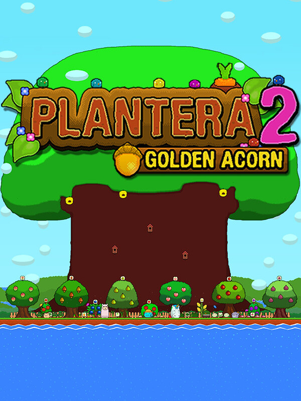

Plantera 2: Golden Acorn
Plantera 2: Golden Acorn
Details
|  | |
| Playtime | 1h 12m 0s |
| Last Activity | 2023-04-26 13:07:38 |
| Added | 2023-08-11 0:29:07 |
| Modified | 2023-08-11 0:33:34 |
| Completion Status | Completed |
| Library | Steam |
| Source | Steam |
| Platform | PC (Windows) |
| Release Date | 2023-04-12 |
| Community Score | |
| Critic Score | |
| User Score | |
| Genre | Indie Point-and-click |
| Developer | VaragtP |
| Publisher | VaragtP |
| Feature | Single Player |
| Links | Official Twitch Steam |
| Tag | |
Description

The round blue Mellows return to tend to the garden once more and grow the big magical oak tree that have been rumored to have placed its seed there. Build up your garden around the tree to attract Mellows, round blue creatures that will help you pick up things and harvest your plants.
Tend to the magical tree and harvest its golden acorns, and grow your garden from a small vegetable patch into a sprawling sanctuary of plants, vegetables, bushes, trees and cute animals and creatures.

Start with nothing more than a small flat plot of land and a few vegetable crops to harvest for money. You must buy additional crops and gain experience and money to level up your garden and unlock new and more advanced crops and items.
Adorn your garden with decorations and watch as your garden grow more lush than ever before with new flora and get populated by new animals, both in the sea, on the ground and in the sky.

If you want you can pluck trees and harvest plants yourself, or let your Mellows do the work for you while you watch or build and invest in new plants. The Mellows will even continue to work and tend to the garden while you are not playing the game.
Adorn the garden how you see fit with a collection of decorations including a variety of flowers, mushrooms and water plants.
As you play you will unlock new items and as you continue to expand and improve your garden your magic oak tree will grow ever bigger with it, soon reaching its crown to the sky and beyond and maybe even discover its secrets.

Features
- Build the Garden of Your Dreams: Design, decorate and inhabit your garden with complete freedom. You get to choose what and how many crops, bushes, trees, animals and decorations are placed within your garden.
- Continue to Grow Even While you are Away: With the help of the Blue Mellows, your garden will continue to grow new crops that are harvested, earning additional money and experience even while you are not playing.
- Level up and Unlock New Crops and Animals: Gain experience and level up unlocking an array of new crops, bushes, trees, animals, decorations, plots of land and even special items such as hats and masks for your friends the Mellows.
- Scare off Unwelcome Guests: Scare unwelcome visitors from the garden such as Sly Foxes, Grumpy Hogs and UFOs among a variety of others out of the garden by punching them or setting up defenses such as Guard Dogs, Fences or even Bees.
- Interactive or Sit-back and Relax: Interact with the game by harvesting crops, warding off baddies and adding new items to your garden or simply just sit back and watch and relax.